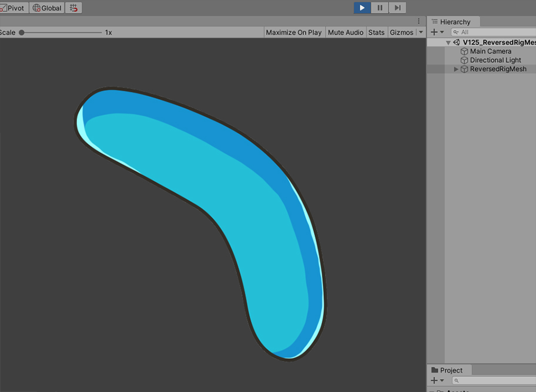

AnyPortrait > マニュアル > リギングが適用されたメッシュの反転サイズ
リギングが適用されたメッシュの反転サイズ
1.2.5
AnyPortraitで製作されたキャラクターをUnityのシーンに移動すると、このキャラクターは「片面のMeshRenderer」の組み合わせで構成されます。
メッシュのスケールを逆にするか、GameObjectを逆にすると、メッシュの裏側がレンダリングされます。
ただし、両面レンダリングを設定していない場合、メッシュの裏側はゲームに表示されません。
（両面レンダリングの設定方法）
幸い、AnyPortraitには、メッシュのサイズが逆になっても適切にレンダリングする機能があります。 （サイズが反転されたメッシュ）
しかし、この機能は、「リギングが適用されていないメッシュ」に限定されます。
リギングが適用されたメッシュに対して、接続されたボーンのサイズが反転されてからかどうかをすべて確認する必要がので、性能を低下させる恐れがあります。
しかし、リギングが適用されたメッシュのサイズを必ず反転させるべき場合もあるので、AnyPortrait v1.2.5に追加されたオプションを利用してみましょう。
このページで紹介されたオプションを使用すると、「両面レンダリング」を適用しなくても、リギングが適用されたメッシュのサイズを反転させることが可能です。

説明のために、単純なメッシュとボーンを準備しました。
これは3つのボーンが1つのメッシュに接続された状態です。

3つのボーンの中の親である「緑のボーン」の大きさを「制御パラメータ」に基づいて反転させてみましょう。
左の画像は、デフォルトの状態であり、右の画像は、サイズが反転された状態です。
同様に、リギングが適用されたメッシュの大きさも反転しました。

Bakeを実行した後、Unityシーンで実行してみましょう。
デフォルトの状態で、メッシは正常にレンダリングがされます。

「制御パラメータ」の値を変更して、「ボーンの大きさが反転された状態」にすると、メッシュはレンダリングされません。

実際には、メッシュはなくならず、サイズだけが変わって裏面が今後出てきた状態です。
ただし、メッシュの背面には、基本的にレンダリングされていないため、メッシュが消えたかのように見受けられます。
従来は、この問題を解決するためにメッシュが両面でレンダリングされるように（関連ページ）を設定する必要があります。
しかし、v1.2.5で追加されたオプションを使用して、この問題を解決することもできます。

AnyPortraitエディタを開いて、
(1) Bakeボタンを押します。
(2) Settingタブを選択します。
(3) Flipped Meshオプションの値がCheck excluding Rigged Meshesになっていることを見ることができます。
(4) オプションの値をCheck Allに変更します。
- Check excluding Rigged Meshes : リギングされたメッシュを除いて、大きさが反転されたメッシュが正常に描画されるよう作成されます。
- Check All : 可能なすべての場合についてサイズが反転されたメッシュがレンダリングされるようになります。

再度Bakeを実行し、ゲームを実行すると、ボーンの大きさが反転されてメッシュがひっくり返っても、メッシが正常に表示されるのを見ることができます。
注意事項
- Check Allにオプションを変更すると、すべてのリギング値を毎フレームごとにチェックするので、パフォーマンスが低下することがあります。
- メッシュのリギングされたすべてのボーンの中一部のボーンだけサイズが反転された場合、メッシは正常に表示されないことがあります。